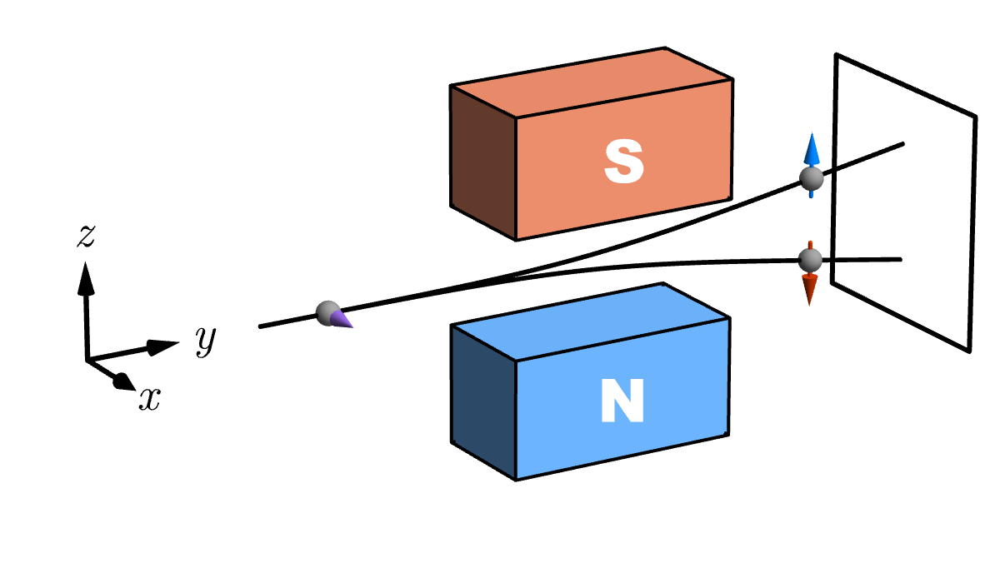

1.1.1 Spins and Qubits#
Prompts
What is spin, and why is it fundamentally different from classical rotation? Why can’t we picture it simply as a little spinning arrow?
What is a qubit, and how does it generalize the notion of spin? Why is a two-state system the simplest quantum system?
How do the classical bit and quantum qubit differ in their information content and measurement properties?
Design a Stern-Gerlach-style thought experiment to probe the non-classical nature of spin.
Why are qubits considered the “building blocks” of quantum information and potentially all quantum systems?
Lecture Notes#
At the heart of quantum mechanics lies a startling discovery: the most fundamental properties of matter cannot be visualized or understood through classical intuition. Spin—an intrinsic angular momentum carried by every elementary particle—is where this quantum strangeness becomes undeniable. It is an angular momentum without anything rotating, a magnetic property without a classical analog, and yet it determines the structure of atoms, the stability of matter, and the nature of force itself. Understanding spin is the gateway to understanding why quantum mechanics is necessary.
Spin: Intrinsic Angular Momentum
Spin is an intrinsic form of angular momentum carried by elementary particles such as electrons, protons, and photons. Unlike orbital angular momentum (which arises from a particle’s motion through space), spin is a purely quantum property—it has no classical analog, and we cannot interpret it as physical rotation of a charge or mass distribution.
Classical vs. Quantum Angular Momentum#
In classical mechanics, angular momentum \(\boldsymbol{L} = \boldsymbol{r} \times \boldsymbol{p}\) describes a rotating object. We can visualize it: a spinning top has angular momentum pointing along its spin axis, and the magnitude is \(L = m\omega r^2\) for a point mass.
Spin is not spinning. When we say an electron “has spin,” we mean it carries an intrinsic angular momentum that cannot be understood as orbital motion or classical rotation. There is no classical picture that correctly captures spin. Instead, spin is a fundamental quantum property built into the fabric of particle physics.
Discussion
The anomalous g-factor: why doesn’t spin behave like orbital angular momentum?
To compare orbital motion and spin on the same footing, we need three definitions.
Angular momentum \(\boldsymbol{J}\) is the conserved quantity associated with rotational symmetry. Orbital angular momentum is \(\boldsymbol{L}=\boldsymbol{r}\times\boldsymbol{p}\) for motion in space. Spin \(\boldsymbol{S}\) is an additional, intrinsic contribution with the same operator algebra as angular momentum but not expressible as \(\boldsymbol{r}\times\boldsymbol{p}\) for a point particle.
Magnetic dipole moment \(\boldsymbol{\mu}\) is the vector that governs how the system couples to a magnetic field: the interaction energy is \(U=-\boldsymbol{\mu}\cdot\boldsymbol{B}\) (and the torque is \(\boldsymbol{\tau}=\boldsymbol{\mu}\times\boldsymbol{B}\)). For a planar current loop, \(|\boldsymbol{\mu}|\) equals current times enclosed area.
\(g\)-factor (relative to the classical proportionality \(q/2m\)): for a particle of charge \(q\) and mass \(m\), we define the dimensionless number \(g\) by
\[\boldsymbol{\mu} = g\,\frac{q}{2m}\,\boldsymbol{J}\]when the magnetic moment and angular momentum contributed by the same degree of freedom are parallel. For an electron, \(q=-e\) and it is common to introduce the Bohr magneton \(\mu_B = e\hbar/(2m_e)\), so the same relation reads \(\boldsymbol{\mu} = -g\,(\mu_B/\hbar)\,\boldsymbol{J}\) (again for the piece of \(\boldsymbol{\mu}\) tied to that \(\boldsymbol{J}\)).
With this convention, simple orbital motion in an atom gives \(g_L=1\): the magnetic moment from \(\boldsymbol{L}\) matches what the classical ratio \(q/2m\) would suggest. Electron spin instead gives \(g_S\approx 2\) (QED corrections yield \(g_S = 2.00232\ldots\)). The departure of \(g_S\) from \(g_L\) is what people summarize as the anomalous magnetic moment of the electron.
Show that if spin were a classical spinning sphere of uniform charge density and uniform rotation, you could not get \(g=2\) from classical electromagnetism. What is the classical prediction for \(g\) of a uniformly charged, uniformly spinning sphere?
The factor \(g=2\) arises naturally from the Dirac equation (relativistic quantum mechanics). What does this tell us about the relationship between special relativity and spin?
Experimentally, the anomalous magnetic moment of the electron \(a_e = (g-2)/2 \approx 1.159652 \times 10^{-3}\) is the most precisely measured quantity in all of physics. How is this consistent with our description of spin as a purely quantum (non-classical) property?
Spin-1/2 Particles#
For spin-1/2 particles (electrons, protons, neutrons, and many other fermions):
Spin Quantum Numbers
The (squared) magnitude of the spin angular momentum is fixed: \(\boldsymbol{S}^2 = s(s+1)\hbar^2 = (3/4)\hbar^2\) for \(s = 1/2\).
The component along any chosen axis (say, the z-axis) can only take two values: \(S_z = \pm\frac{\hbar}{2}\).
These correspond to spin-up (\(|\uparrow\rangle\), eigenvalue \(+\hbar/2\)) and spin-down (\(|\downarrow\rangle\), eigenvalue \(-\hbar/2\)).
Key Insight: Discrete Spin Values
Unlike classical angular momentum (which can have any orientation), a spin-1/2 particle measured along any axis gives binary outcomes: either “spin-up” or “spin-down.” There are no intermediate values. This discreteness is fundamentally quantum.
The Stern-Gerlach Experiment#
The Stern-Gerlach apparatus is a thought experiment (and a real experimental device) that reveals the quantum nature of spin.
{kind=link}

Fig. 1 Schematic Stern–Gerlach setup: an atomic beam passes through an inhomogeneous magnetic field between pole pieces; spin-up and spin-down components deflect to separate spots on a detector, revealing quantization.#
Setup and Outcomes#
Imagine an inhomogeneous (non-uniform) magnetic field oriented along the z-axis. A beam of atoms (e.g., silver atoms with one unpaired electron) passes through this field:
Atoms in the “spin-up” state (\(|\uparrow\rangle\) along z) experience a force in one direction (say, upward) and are deflected upward.
Atoms in the “spin-down” state (\(|\downarrow\rangle\) along z) experience a force in the opposite direction and are deflected downward.
The beam splits into two discrete bands—there is no continuous smearing.
The splitting is determined by the inhomogeneous force \(F \propto \nabla B \cdot S_z\), which couples the spin to the field gradient.
Sequential Stern-Gerlach Experiments#
Now consider a sequence of three Stern-Gerlach apparatuses. These sequential experiments reveal profound facts about the nature of quantum measurement.
Experiment A: Repeated Z-Measurement
Start with 1000 atoms. The first SG apparatus (z-axis) splits the beam; we block the spin-down beam and keep only the 1000 atoms in state \(|\uparrow\rangle_z\).
Stage |
Apparatus |
Result |
|---|---|---|
1st |
SG-Z |
1000 atoms exit as \(|\uparrow\rangle_z\) (by preparation) |
2nd |
SG-Z |
1000 atoms exit as \(|\uparrow\rangle_z\) |
3rd |
SG-Z |
1000 atoms exit as \(|\uparrow\rangle_z\) |
Every atom that was measured spin-up along z remains spin-up along z in all subsequent z-measurements. The result is perfectly reproducible.
What we learn:
Reproducibility confirms physical reality. Repeating the same measurement yields the same outcome with certainty. This means the first measurement did not produce a random fluke—it revealed (or created) a definite property of the system.
Measurement as state preparation. By selecting the spin-up beam, we have prepared a well-defined quantum state. The second and third apparatuses merely confirm what the first one established.
Experiment B: Intermediate X-Measurement
Start again with 1000 atoms prepared in \(|\uparrow\rangle_z\) by the first apparatus.
Stage |
Apparatus |
Result |
|---|---|---|
1st |
SG-Z |
1000 atoms exit as \(|\uparrow\rangle_z\) (by preparation) |
2nd |
SG-X |
~500 atoms exit as \(|\rightarrow\rangle_x\), ~500 as \(|\leftarrow\rangle_x\) (keep only \(|\rightarrow\rangle_x\)) |
3rd |
SG-Z |
~250 atoms as \(|\uparrow\rangle_z\), ~250 as \(|\downarrow\rangle_z\) |
After the x-measurement, the atoms have forgotten their original z-spin. Measuring along x has completely randomized the z-outcome.
What we learn:
Measurement actively changes the quantum state. The x-measurement does not merely reveal a pre-existing x-spin value while leaving the z-spin intact. It transforms the state: what was a definite \(|\uparrow\rangle_z\) becomes an equal superposition of \(|\uparrow\rangle_z\) and \(|\downarrow\rangle_z\). The original z-information is irreversibly erased.
Incompatible observables cannot be known simultaneously. The z-component and x-component of spin are complementary: gaining information about one necessarily destroys information about the other. This is the operational meaning of non-commutativity \([S_z, S_x] \neq 0\).
From Spin to Qubits#
The physical realization of spin-1/2 systems (electrons, photons, atoms, etc.) is rich and complex. However, quantum mechanics teaches us that we can abstract away the physical details and focus on the essential mathematical structure.
#:::{admonition} Qubit: Universal Two-State System :class: important
A qubit (or quantum bit) is a two-state quantum system—the simplest possible quantum system with a two-dimensional Hilbert space over the complex numbers.
Any pure state can be written as a superposition of two orthogonal basis states, often denoted \(|0\rangle\) and \(|1\rangle\) (or \(|\uparrow\rangle\) and \(|\downarrow\rangle\)).
A qubit is universal: it exhibits all the essential properties of quantum mechanics in its simplest form.
Discussion
Why do all two-level systems obey the same mathematics?
A spin-1/2 electron, a photon polarization, and a Josephson junction superconductor all behave as qubits. They differ dramatically in energy scales (\(\sim 10^{-3}\) eV for nuclear spin vs. \(\sim 1\) eV for optical photons vs. \(\sim 10^{-6}\) eV for superconducting circuits), but share an identical mathematical structure: \(\mathrm{SU}(2)\) transformations on a two-dimensional Hilbert space.
Show that any \(2\times 2\) Hermitian Hamiltonian can be written as \(H = a_0 \mathbf{1} + \boldsymbol{a} \cdot \hat{\boldsymbol{\sigma}}\) where \(a_0\) and \(\boldsymbol{a}\) are real. Why does this mean every qubit Hamiltonian is equivalent to a spin-1/2 particle in some effective magnetic field?
A three-level system (qutrit) also has a simple Hamiltonian. Why don’t we use it as a qubit instead? What would go wrong if we tried to use only 2 of the 3 states as a qubit? Under what conditions is the two-level approximation valid?
The Larmor frequency for electron spin is \(\omega = g_e \mu_B B / \hbar \approx 2\pi \times 28 \text{ GHz/T}\). For typical lab fields (\(B \sim 0.1\) T), is the two-level approximation valid, or do higher energy levels mix in? Estimate the mixing angle.
Why qubits are central:
Simplicity with completeness: A qubit is the smallest quantum system, yet it perfectly demonstrates superposition, entanglement, measurement, and unitary evolution.
Building block of quantum information: Just as classical bits are the fundamental unit of classical information, qubits are the fundamental unit of quantum information.
Universality: Any quantum computation can (in principle) be expressed using qubits and quantum gates acting on them.
Physical realizations are abundant: Spin-1/2 systems, two-level atoms, photon polarization, superconducting circuit states, trapped ions, and more can all serve as qubits.
Classical Bit vs. Quantum Qubit#
Property |
Classical Bit |
Quantum Qubit |
|---|---|---|
Values |
0 or 1 (definite) |
\(\alpha|0\rangle+\beta|1\rangle\) (superposition) |
Information |
Deterministic; value exists before measurement |
Probabilistic; only revealed by measurement |
Measurement |
Non-destructive; can be read many times |
Destructive/Irreversible; collapses to \(|0\rangle\) or \(|1\rangle\) |
States |
2 possible values |
Infinitely many (continuum on Bloch sphere) |
Copying |
Trivial |
Impossible (no-cloning theorem) |
Information capacity |
1 bit |
1 bit (in terms of maximal entropy) |
Degree of freedom |
1 binary integer |
2 real parameters (angles on sphere) |
The Qubit as an Abstract System#
Once we identify the essential structure of a two-level quantum system, we can define a qubit independently of its physical implementation:
Abstract Qubit Definition
Qubit state: A normalized vector in \(\mathbb{C}^2\),
Observables: Hermitian \(2 \times 2\) matrices (discussed in detail in section 1.1.3).
Measurement: Projective measurement onto eigenstates (discussed in section 1.2.1).
Time evolution: Unitary transformations (discussed in section 1.3.1).
This abstraction is powerful because it allows us to study quantum mechanics without worrying about whether we are dealing with electrons, photons, or artificial systems like superconducting qubits.
The “It from Qubit” Perspective#
Contemporary quantum physics research includes the vision that qubits, and quantum information more generally, may be the fundamental building blocks of reality.
“It from Qubit” is a research initiative supported by the Simons Foundation that proposes:
Physical objects and phenomena can be understood as arising from quantum information.
Spacetime, matter, and gravity might all emerge from entanglement and quantum correlations among qubits.
This is a radical reinterpretation of quantum mechanics from an information-theoretic perspective.
While speculative, this vision has motivated rigorous mathematical and conceptual advances in quantum gravity, holography, and the foundations of quantum mechanics.
Summary#
Spin is an intrinsic quantum angular momentum with no classical analog; for spin-1/2, measurements along any axis yield binary outcomes.
The Stern-Gerlach experiment reveals the non-classical nature of spin: different measurements are incompatible; measuring one observable destroys information about another.
A qubit is the abstract mathematical model of a two-state quantum system, capturing the essential structure of any physical spin-1/2 system.
Qubits are the fundamental unit of quantum information and exhibit all core quantum phenomena in their simplest form.
The universality and simplicity of qubits make them central to quantum computing, quantum information, and potentially to understanding the foundations of physics itself.
See Also
1.1.2 State and Representation: Qubit states are mathematical objects; learn how to represent them in different bases
1.1.3 Hermitian Operators: Spin observables are Hermitian operators; see how their eigenvalues relate to measurement outcomes
1.2.1 Measurement Postulate: How do we measure spin? The Born rule connects qubit states to measurement probabilities
Homework#
1. In the Stern-Gerlach experiment, a beam of spin-1/2 atoms passes through an inhomogeneous magnetic field \(\boldsymbol{B} = B_0(z/d)\,\hat{z}\), where \(d\) is a length scale characterizing the field gradient. The force on a magnetic moment \(\boldsymbol{\mu} = \gamma \boldsymbol{S}\) is \(F_z = \mu_z (\partial B_z / \partial z)\). For an electron with \(\gamma = -e/m_e\) and \(S_z = \pm \hbar/2\), show that the two deflected beams separate by an amount proportional to \(\hbar\). What does this tell you about why the splitting is evidence for quantized angular momentum?
2. Consider the sequential Stern-Gerlach setup: first measure \(S_z\) (keep spin-up), then measure \(S_x\) (keep \(|+\rangle_x\)), then measure \(S_z\) again. Starting with \(N\) atoms, how many emerge from each output of the third apparatus? Explain physically why the intermediate \(S_x\) measurement “erases” the \(S_z\) information.
3. Suppose you have three Stern-Gerlach apparatuses oriented along the \(z\), \(x\), and \(z\) directions. But now, instead of blocking one beam after the \(S_x\) measurement, you recombine both beams coherently before the final \(S_z\) measurement. What fraction of the original spin-up atoms emerge as spin-up from the third apparatus? Compare with the result of Problem 2 and explain the difference.
4. A classical bit stores one of two values: 0 or 1. A qubit state \(|\psi\rangle = \alpha|0\rangle + \beta|1\rangle\) is specified by two continuous real parameters (after normalization and global phase removal). Does this mean a qubit stores more information than a classical bit? Argue carefully why or why not, considering what happens when you measure the qubit.
5. The spin quantum number for a spin-\(s\) particle allows \(2s+1\) values of \(S_z\): \(m = -s, -s+1, \ldots, s\). For spin-1/2, \(|\boldsymbol{S}|^2 = s(s+1)\hbar^2 = \tfrac{3}{4}\hbar^2\), while the maximum \(S_z = \tfrac{1}{2}\hbar\). Show that \(S_z^{\max} < |\boldsymbol{S}|\) and explain the physical significance: why can the spin vector never be fully aligned along any single axis?
6. In Experiment B of the sequential Stern-Gerlach discussion, we found that measuring \(S_x\) on a state prepared as \(|\uparrow\rangle_z\) yields outcomes \(\pm\hbar/2\) with equal probability. Without detailed calculation, use a symmetry argument to explain why the probabilities must be equal (hint: consider what the \(z\)-axis “knows” about the \(x\)-axis).
7. List three distinct physical systems that can serve as qubits and, for each, identify what plays the role of \(|0\rangle\) and \(|1\rangle\). For one of your examples, briefly describe how a superposition state \(\alpha|0\rangle + \beta|1\rangle\) is prepared in practice.